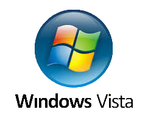

Windows Vista
________________________________________________________________________________ Windows Vista — версія Microsoft Windows NT, серії операційних систем, що використовуються на персональних комп'ютерах.
У серії продуктів Windows NT нова система носить номер версії 6.x (Windows 2000 — 5.x, Windows XP — 5.x, Windows Server 2003 — 5.x). Для позначення «Windows Vista» іноді використовують абревіатуру «WINVI», яка об'єднує назву «Vista» і номер версії, записаний римськими цифрами[джерело?].
Windows Vista, як і Windows XP, виключно клієнтська система. У липні Microsoft повідомила про намір офіційно представити серверну версію Windows Vista — Windows Server 2008 на спеціальному заході 27 лютого цього року.
200x року Microsoft офіційно випустила Windows Vista і Office 2007 для корпоративних клієнтів. 30 січня 2007 року почалися продажі системи для звичайних користувачів
_______________________________________________________________________________________
Історія
_______________________________________________________________________________________На ранньому етапі розробки система була відома під кодовим ім'ям Longhorn (за назвою бару Longhorn Saloon поблизу лижного курорту Вістлер в Британській Колумбії). Назва «Vista» була оголошена 22 лютого 2001 року. Опісля декілька місяців Microsoft також перетворили ім'я Windows Longhorn Server в Windows Server 2008. З 8 листопада 2006 року повноцінна версія Windows Vista доступна для виробників устаткування. Публічний реліз для звичайних користувачів відбувся 30 січня 2007 року.
_______________________________________________________________________________________
Назва
_______________________________________________________________________________________У перекладі українською «vista» означає «перспектива» (огляду) або «краєвид», і є запозиченням з іспанської, де «vista» — зір, бачення. Первинна назва була визначена і схвалена співробітниками Microsoft, а потім протестована в декількох регіонах світу методом фокус-груп.
_______________________________________________________________________________________
Огляд
_______________________________________________________________________________________За заявами компанії в Windows Vista була оновлена підсистема управління пам'яттю і введенням-виводом. Новою функціональністю також є «Гібридний сплячий режим», при використанні якого вміст оперативної пам'яті додатково записується на HDD, але і з пам'яті також не витирається. В результаті якщо подача енергії не припинялася, то комп'ютер відновлює свою роботу користуючись інформацією з RAM. Якщо живлення комп'ютера вимикалося, операційна система використовує збережену на HDD копію RAM і завантажує інформацію з неї (аналог сплячого режиму).
З 2004 року, розробникам і ІТ-професіоналами була розіслана перша бета-версія. У неї були включені всі розроблені на той день технічні можливості і наочно представлені основи нової архітектури системи. Перша бета-версія була випущена для того, щоб у ІТ-аудиторії склалося перше враження про нову операційну систему і щоб виявити помилки в новій системі ще до її офіційного випуску. Згідно з результатами першого етапу бета-тестування були доопрацьовані призначені для користувача функції системи, які потім були представлені в другій бета-версії. Остаточна версія Windows Vista представлена у варіантах для 64- і для 32-розрядних процесорів. Windows Vista має також новий логотип. На думку дизайнерів компанії, цей логотип ілюструє зміни в призначеному для користувача інтерфейсі нової операційної системи (який через зовній вигляд називають «скляним» — «Aero Glass»). У Windows Vista також вбудовано Windows Defender та Брандмауер Windows.
_______________________________________________________________________________________
Редакції
_______________________________________________________________________________________Наступна сторінка -->